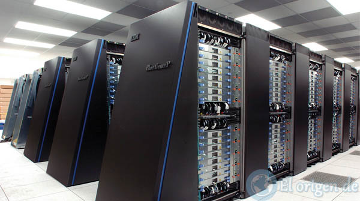
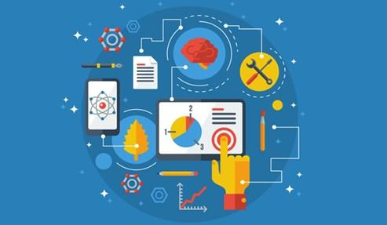
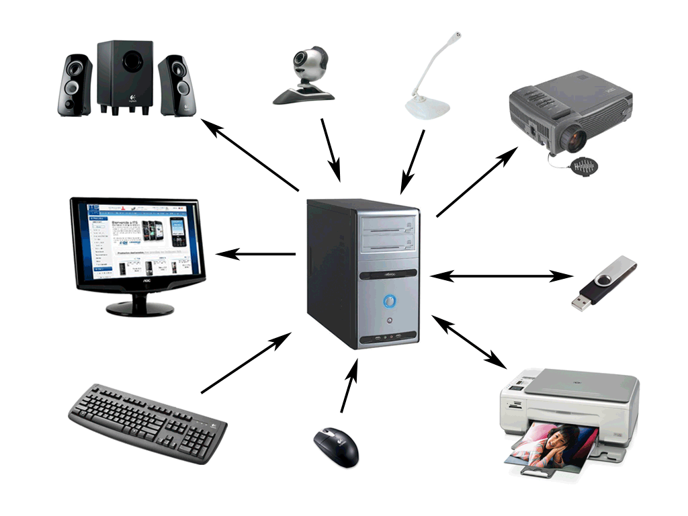
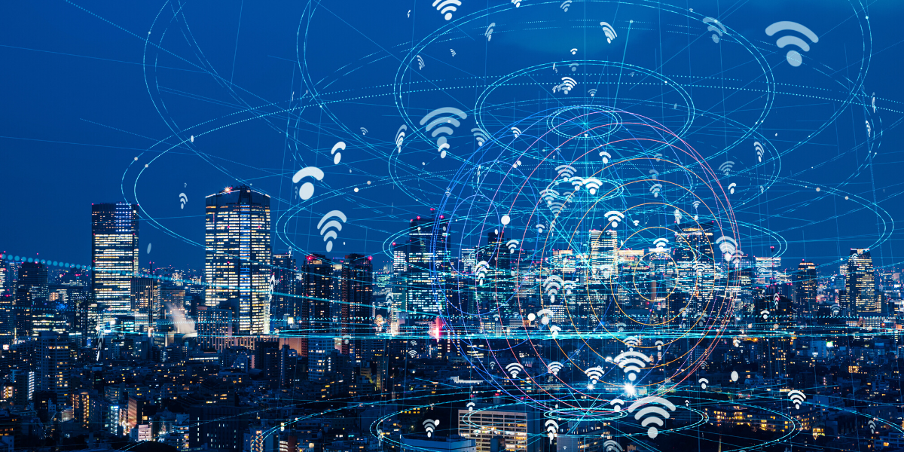

Definición
La informática, también llamada computación, es el área de la ciencia que se encarga de estudiar
la administración de métodos, técnicas y procesos con el fin de almacenar,
procesar y transmitir información y datos en formato digital.
La informática es la disciplina o campo de estudio que abarca el conjunto
de conocimientos, métodos y técnicas referentes al tratamiento automático de la información, junto
con sus teorías y aplicaciones prácticas, con el fin de almacenar, procesar y transmitir
datos e información en formato digital utilizando sistemas computacionales.
El algoritmo informático es el conjunto de órdenes de manera consecutivas que se llevan
a cabo en un proceso para dar respuesta a un problema. A través de este logaritmo el programador
puede resolver el problema antes de escribirlo en un lenguaje de programación que entiende la máquina,
es decir el logaritmo debe ser resuelto antes de escribir el código en el programa.
Orígenes de la Informática
La informática es un termino que fue inventado por Phillipe Dreyfus en Francia por el año 1962 y
aceptado por la Academa Francesa en 1966. En España lo aceptaron en 1968. Este termino proviene
de la palabra en frances informatique
En los inicios del procesamiento automático de la información, con la informática solo se facilitaban
los trabajos repetitivos y monótonos del área administrativa. La automatización de esos procesos trajo
como consecuencia directa una disminución de los costes y un incremento en la productividad. En la
informática convergen los fundamentos de las ciencias de la computación, la programación y también las
metodologías para el desarrollo de software, la arquitectura de las computadoras, las redes
de computadores, la inteligencia artificial y ciertas cuestiones relacionadas con la electrónica.
Actualmente, es difícil concebir un área que no esté vinculada o requiera del apoyo de la informática.
Esta puede cubrir un enorme abanico de funciones, que van desde las más simples cuestiones domésticas
hasta los cálculos científicos más complejos.

Objetivos de la Informática
Algunos de los principales objetivos de la informática son los siguientes:
Procesar grandes cantidades de información que no serían posibles si tuviéramos que hacerlo de forma manual.
Automatizar todo tipo de procesos y sistemas para gestionar datos: Con lo que conseguimos aumentar
enormemente la productividad, la velocidad en la creación y manejo de tareas y además evitamos muchos
errores humanos.
Establecer comunicación con profesionales de otras disciplinas para identificar problemas de
información, entenderlos y trasladarlos a una estructura informática. Identificar y contribuir a
resolver problemas jurídicos relacionados con la informática. Comprender la estructura interna del
software de base para su uso. Conocer y comprender los problemas prioritarios y las necesidades
sociales del país; de acuerdo con las características de su entorno, proponer alternativas de solución,
desde el punto de vista de la informática, que propicien la excelencia tecnológica.

Componentes de la Informática
La informática esta compuesto por:
Componentes físicos
Se trata del hardware del sistema informático.
Las computadoras, sus componentes internos como memorias, CPU, los periféricos de
entrada y salida como módem, impresoras, monitores, y todo aquel dispositivo que se
conecte a este hardware.

Componentes lógicos
Es el que proporciona la capacidad y la potencia de proceso para que un sistema informático funcione.
Este componente es el software del sistema informático.
Consta como parte del software, la documentación, los datos que procesa y gestiona.
El software es el que se requiere para almacenar, procesar y distribuir los datos que se registran en el mismo.
Componentes Humano
Está formado por los usuarios, es decir quienes utilizan los dos anteriores componentes.
Son los encargados del soporte y mantenimiento técnico.
El Internet
Internet es un neologismo del inglés que significa red informática descentralizada de alcance
global. Se trata de un sistema de redes interconectadas mediante distintos protocolos que ofrece
una gran diversidad de servicios y recursos, como, por ejemplo, el
acceso a archivos de hipertexto a través de la web.
Internet es la unión de todas las redes y computadoras distribuidas por todo el mundo, por lo
que se podría definir como una red global en la que se conjuntan todas las redes que utilizan
protocolos TCP/IP y que son compatibles entre sí. Éste se creó en la década de los 60 como un
proyecto gubernamental militar, sin embargo, con el paso de los años ha evolucionado
a tal punto que se ha vuelto indispensable para las personas.
